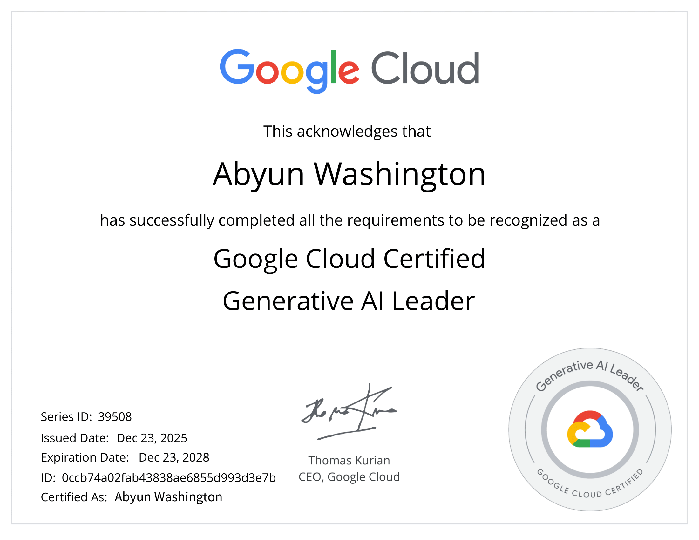
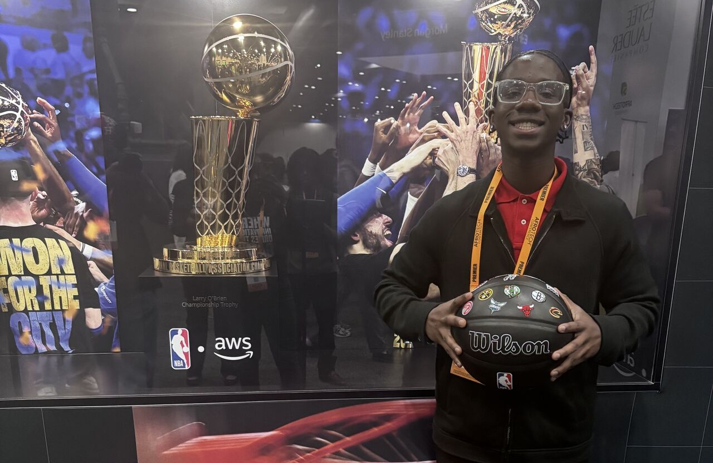

About Me
I’m a Management Information Systems student at Prairie View A&M University (GPA 3.9) with a passion for strategy and technology consulting, AI, and cybersecurity. I’ve gained hands-on experience through programs like the Deloitte Future Accounting Leaders’ Summit, Google Career Launchpad, and CodePath Cybersecurity, applying data-driven problem solving to real-world challenges. Beyond the classroom, I founded PVAMU’s first student-led consulting group. I enjoy turning analysis into actionable recommendations and welcome connections with professionals and mentors in consulting and tech.

This semester I grew academically, professionally, and personally, earning a 3.8 semester GPA (3.86 cumulative), serving through B.E.A.U.X and SGA, attending the Deloitte Summit and AFROTECH, and participating in the TMCF Google Career Launchpad and CodePath Cybersecurity Program, while continuing to build technical and leadership skills.
Generative AI Leader Certification

Had the opportunity to earn the Google Cloud Certified Generative AI Leader badge through the Google Career Launchpad program in partnership with Thurgood Marshall College Fund (TMCF). The experience strengthened my understanding of generative AI fundamentals, ethics, and enterprise applications, and how AI can drive better decision-making and productivity.
Deloitte’s Future Accounting Leaders Summit

Represented Prairie View A&M University at Deloitte’s Future Accounting Leaders Summit. I participated in a business simulation, won our Shark Tank-style pitch competition, built bikes for children in need, earned all summit badges, and connected with Deloitte professionals, among other experiences.
CodePath’s Intro to Cybersecurity Program

Accepted into CodePath’s Intro to Cybersecurity program, where I’ll explore real-world security threats, learn to identify vulnerabilities, and develop the skills and mindset of an ethical hacker.

Had the opportunity to attend AfroTech 2025, one of the largest tech conferences for Black professionals. The event allowed me to connect with industry leaders, learn about emerging technologies, and expand my professional network. It was an inspiring experience that reinforced my passion for technology, innovation, and leadership.
BCG Strategy Consulting Virtual Job Simulation

Excited to complete the Boston Consulting Group (BCG) Strategy Consulting Virtual Job Simulation on Forage. I analyzed market trends, competitor strategies, and consumer survey data to develop data-driven recommendations on pricing and customer retention, reinforcing my interest in strategy consulting and problem-solving.